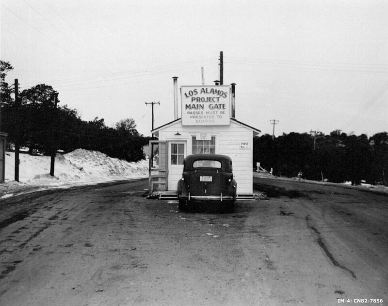

Los Alamos
Manhattan Project, New Mexico

Secret laboratory where Oppenheimer's scientists designed the first atomic bombs. Confirmed program. 1
Open in the interactive Watcher
Related
- John von Neumann Person
- J. Robert Oppenheimer Person
Sources
- Los Alamos National Laboratory Wikipedia